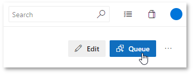

Integrate TestCafe with Azure DevOps
This topic describes how to integrate TestCafe tests into an Azure DevOps Server and an Azure Pipelines project's build process.
Step 1 - Add TestCafe Dependency to the Project #
Open the repository's root directory and execute the following command:
npm install --save-dev testcafe testcafe-reporter-xunit
This command installs the latest TestCafe and xUnit reporter versions locally and adds them to the devDependencies section in the package.json file.
{
"devDependencies": {
"testcafe": "*",
"testcafe-reporter-xunit": "*"
}
}
Step 2 - Provide a Command to Run Tests #
The test run command that uses TestCafe should be also added to package.json to the scripts section because TestCafe is installed locally.
{
"scripts": {
"test": "testcafe chrome:headless tests/**/* --reporter spec,xunit:report.xml"
},
"devDependencies": {
"testcafe": "*",
"testcafe-reporter-xunit": "*"
}
}
This allows you to use npm test to run tests.
Step 3 - Configure a Build Task #
Now you are ready to create a build task.
Configure Build Task on Azure Pipelines #
Open azure-pipelines.yml or create it in the repository root and add the following job:
jobs:
- job: e2e_tests
pool:
vmImage: 'Ubuntu 16.04'
steps:
- task: NodeTool@0
inputs:
# Replace '10.14' with the latest Node.js LTS version
versionSpec: '10.14'
displayName: 'Install Node.js'
- script: npm install
displayName: 'Install TestCafe'
- script: npm test
displayName: 'Run TestCafe Tests'
- task: PublishTestResults@2
inputs:
testResultsFiles: '**/report.xml'
testResultsFormat: 'JUnit'
| Property | Description |
|---|---|
jobs |
The list of jobs. |
job |
The job name. |
pool |
The agent pool that executes this build job. |
vmImage |
The agent's virtual machine image name. This tutorial uses a Microsoft-hosted agent that runs on an Ubuntu 16.04 machine. You can find the list of software installed on this machine in the Azure Pipelines GitHub repository. |
steps |
The list of steps performed when executing a job. |
task |
Adds a task to the pipeline. The NodeTool task installs Node.js and adds it to the PATH variable. The PublishTestResults task publishes the TestCafe report to the server. |
inputs |
Specifies input variables for the task. |
versionSpec |
The Node.js version to install. The latest LTS version number is available on the Node.js website. |
displayName |
A step name displayed in build results. |
script |
A console command executed at this step. |
testResultsFiles |
The path to the report file to publish. |
testResultsFormat |
The report format. |
The first step in this task installs TestCafe with npm install and the second step runs TestCafe tests using npm test.
Commit your changes and push them to the repository.
Configure Build Task on Azure DevOps Server #
Hover over the Pipelines section and click Builds in the pop-up menu.

Click the New button and select New build pipeline.
Azure DevOps Server asks you to select the repository that contains your code. Enter the repository details and click Continue.

The next screen prompts you to select a build template. Choose to start with an empty job.

On the next screen, select an agent pool to run the job.
The agent should run on a machine with all the necessary browsers installed.

Now you can add tasks to the job. Click the + button to create a new task.

Select Node Tool Installer from the task list. This task installs Node.js and adds it to the PATH variable.
The task is now added to the pipeline. Click its name in the pipeline to enter the task settings.
On the settings screen, specify the Node.js version to install. Use the latest LTS version - it is available on the Node.js website.
Now add another task that runs a shell command. Click the + button again and select Command Line from the task list.
Configure this command to install TestCafe. Open its settings, specify a name and enter the following command:
npm install

In the same manner, add another Command Line task that runs TestCafe tests.
npm test
Add a task that publishes test results to the server. Click the + button and select Publish Test Results from the task list.
In task options, set Test result format to JUnit and specify the report file name (**/report.xml) in the Test results files field.
You must also specify that the Publish Test Results task should run if TestCafe tests fail. Expand the Control Options section and select Even if a previous task has failed, unless the build was canceled in the Run this task dropdown list.
Click Save & queue to save the changes and run this task.
This opens the Save build pipeline and queue window. Specify an optional comment that describes the changes you have made. Select an agent pool that runs this task, the repository branch and the commit that contains code to build. You can leave the Commit field blank to use the latest commit. Click Save & queue.

Step 4 - Run Test Task and View Results #
Option 1 - Enable Continuous Integration #
You can enable continuous integration in Azure DevOps to specify that the pipeline is run every time your code changes.
On Azure Pipelines, continuous integration is enabled for every newly created build.
On Azure DevOps Server, select the build and click Edit.

Then open the Triggers tab.
Click the repository name under the Continuous integration header and check Enable continuous integration.

To build a specific branch or path, add Branch filters and/or Path filters.
Now, changes to code in the repository trigger the build.
Option 2 - Run the Build Manually #
Select the build and click Queue to run the build.
On Azure DevOps Server, you can find this button under the build header.
On Azure Pipelines, this button is in the top-right corner.

This opens the Queue build window. Specify the branch and commit that should be built. You can leave the Commit field blank to use the latest commit. On Azure DevOps Server, specify the agent pool that should run the task. Click Queue.
View Test Results #
Option 1 - View the Published Report #
Hover over the Test Plans section and click Runs in the pop-up menu.
Double-click a test run to view the report.
This opens the Run summary view that displays test run results.
Option 2 - View the Build Log #
Select the build and click the commit whose results you want to view.
In the detail view, select a task to view its log.

This displays a detailed log that includes a TestCafe report.